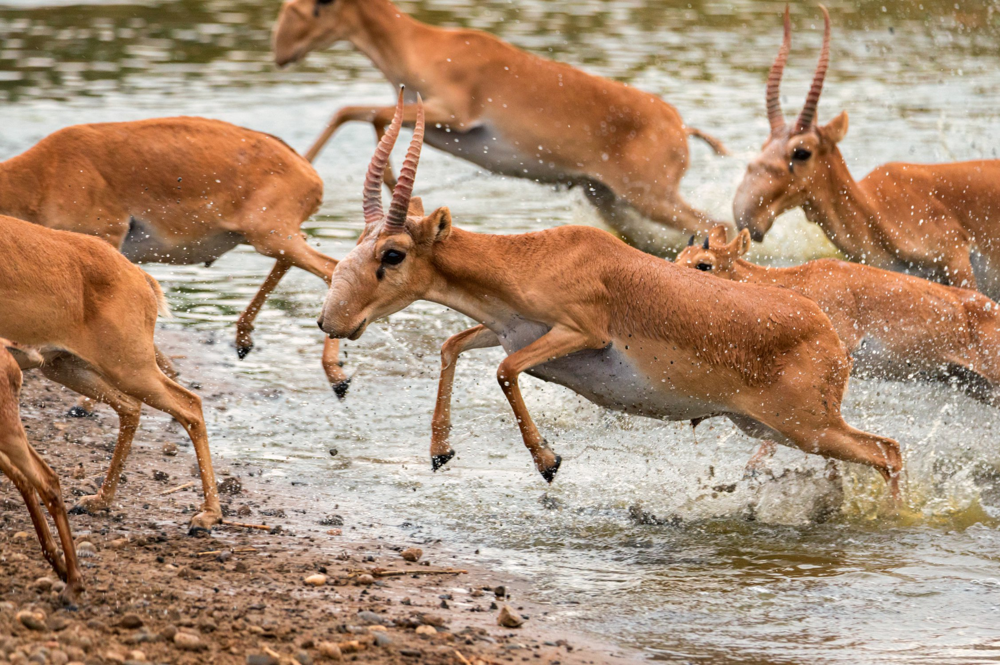

01
Браконьерство
Главный враг взрослого сайгака — не волк, а джип. Преследование по ровной степи лишает антилопу её единственного преимущества: скорости. Цель — рога, которые до сих пор ценятся в традиционной медицине соседних стран.
факт: одно преследование на машине губит сразу нескольких животных